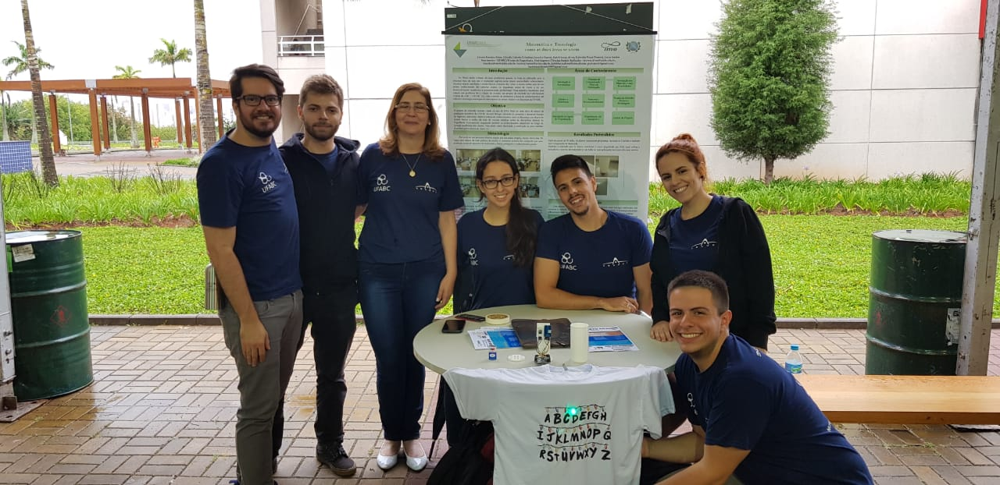

Minha cor preferida é o amarelo, por esse motivo e por outros o girassol se tornou minha flor preferida. Por isso escolhi um girassol para ser o meu avatar. 🌻
Olá, eu sou a Mariana!
Estudante da Engenharia da Informação na UFABC!
A UFABC
Ingressei na UFABC em 2017 sonhando em cursar Engenharia Aeroespacial, mas logo em meu primeiro quadrimestre percebi que tinha muito interesse em programação e, após cursar algumas disciplinas de Ciência da Computação e Engenharia da Informação, decidi seguir com a Engenharia da Informação. Apesar de não ter seguido com a Engenharia Aeroespacial, ainda tenho muito interesse na área e por conta disso, busquei participar de atividades extracurriculares que me permitissem me envolver mais com essa engenharia também, e foi assim que eu conheci o Arandu!

Aventuras
Além de programação, também sou apaixonada mar e aventuras. Essa paixões me levaram a fazer um curso de mergulho e me tornar mergulhadora certificada pela PADI.
Também me levaram a enfrentar meus medos e pular de parapente no ano passado, o que foi uma experiência incrível!
No dia a dia...
Infelizmente, não é todo dia que eu posso mergulhar ou saltar de parapente, então, para me divertir no dia a dia, eu gosto de jogar videogames, sozinha ou com meus amigos. Recentemente, um dos meus jogos preferidos tem sido Dave The Diver, um jogo que conta a história de um mergulhador que abre um restaurante junto com alguns amigos, e deve mergulgar para conseguir os ingredientes para os pratos e também para salvar o ecossistema marinho que está sofrendo com alguns problemas misteriosos.